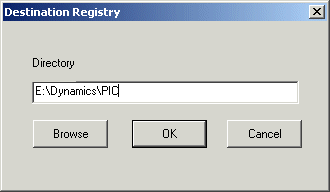

Using the picture converter utility
Using the Picture Converter utility, you can update an .odf picture file created in a previous version of DeltaV to a .grf file for DeltaV Operate HMI/SCADA Version 2.5 and later.
Before starting the picture converter, the files must have names that are valid in DeltaV Operate. You might need to rename some of your .odf picture files to comply with the following naming conventions:
Only the alphabetic characters a-z and A-Z, the numbers 0-9, and the underscore (_) character are permitted.
The name must begin with an alphabetic character.
Running Picture Converter
Open DeltaV Operate in configure mode.
Add the Picture Converter button to the DeltaV Utilities toolbar, if not already added.
Refer to Modify Existing Toolbars for information about adding the button.
Tip Placing your cursor over each toolbar button shows the name of the utility the button launches.
Click the Picture Converter button to start the utility.
Click the Set Destination Button on the toolbar. The Destination Registry dialog opens.
Enter the destination directory in the Directory text box. This typically is the picture directory in DeltaV\iFIX:

From the File Open dialog, select the .odf picture files that you want to convert.
A log file is created for each file that is upgraded. The file name is picturename with .log extension.
Updating Picture Components
Only MultiPen charts will be converted - Any other type of chart (other than a MultiPen chart) contained in an .odf picture file will not be converted. More specifically, the following charts will be ignored: Multi-bar, XY Plot, X-Bar, R-Bar, S-Bar, and Histogram charts. A warning will be logged.
Tag Group, DDE Links, and variable references are not converted - The object and its dynamic property will be created in the new picture, but the animation will be tied to a data source that doesn't exist. A warning will be logged.
Command language code will not be converted to Visual Basic code - Command language scripts will be pasted into the appropriate event on the object. Each line will be commented out since the code will undoubtedly not compile under Visual Basic. You will have to manually upgrade your scripts to VB code.
Alarm Summary objects are converted without properties - Alarm Summary objects will be created in the new picture and correctly placed, but the other properties such as Node, Filtering, etc. will not be converted. A warning will be logged.
Charts with no pens will not be converted - If a chart exists that no pens can be created for, because the sources of the pens could not be connected to or because of other problems, the chart will not be created in the new picture. A warning will be logged.
Dynamo Sets must be upgraded by the user - To upgrade an .odf Dynamo Set created in a pervious version of DeltaV, use the Picture Converter utility. All the prompts will be lost. Open the new picture containing the dynamos and drag them into a new Dynamo Set.
Group tags are not upgraded - The Group Tag property of groups in an .odf picture file created in a previous version of DeltaV will be ignored when creating the group in the new picture for DeltaV Operate.
Tag Group conversion - The first character of tag groups will be changed from a '?' to a '@' to correspond with the new naming convention.
Picture properties Grid Settings are not converted.
Numeric data entry is the only type converted. -Datalinks using other types of data entry will be converted to datalinks using numeric data entry. DeltaV Operate does not convert any other types of data entry for datalinks. This includes slider entry, pushbutton entry, and ramp value entry.
DataLink Controllable property is not converted -There is no mapping property in DeltaV Operate.
Font size may appear 1 pt smaller - In some cases font size will appear 1 pt smaller in the new picture.
Text on buttons may be clipped - Because the space allowed for button text in an .odf picture file created in a previous version of DeltaV differs considerably from the space allowed on DeltaV Operate buttons, when converted, the text in the DeltaV Operate buttons might be clipped. You can fix this by making the button bigger or making the font smaller.
Flash on new alarm for datalinks is not converted.